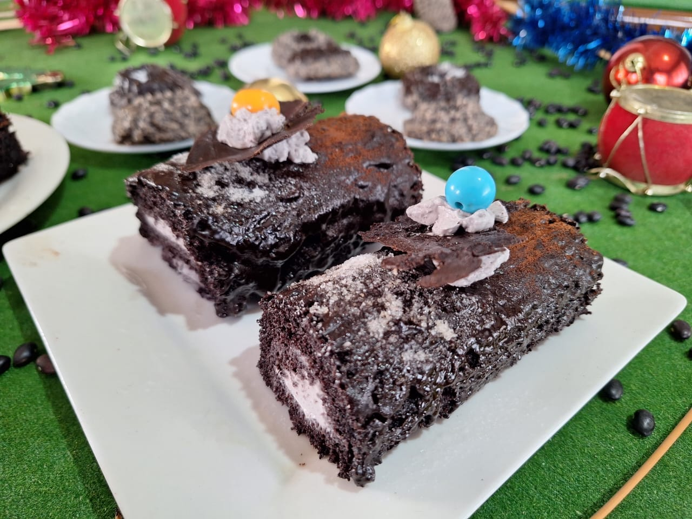
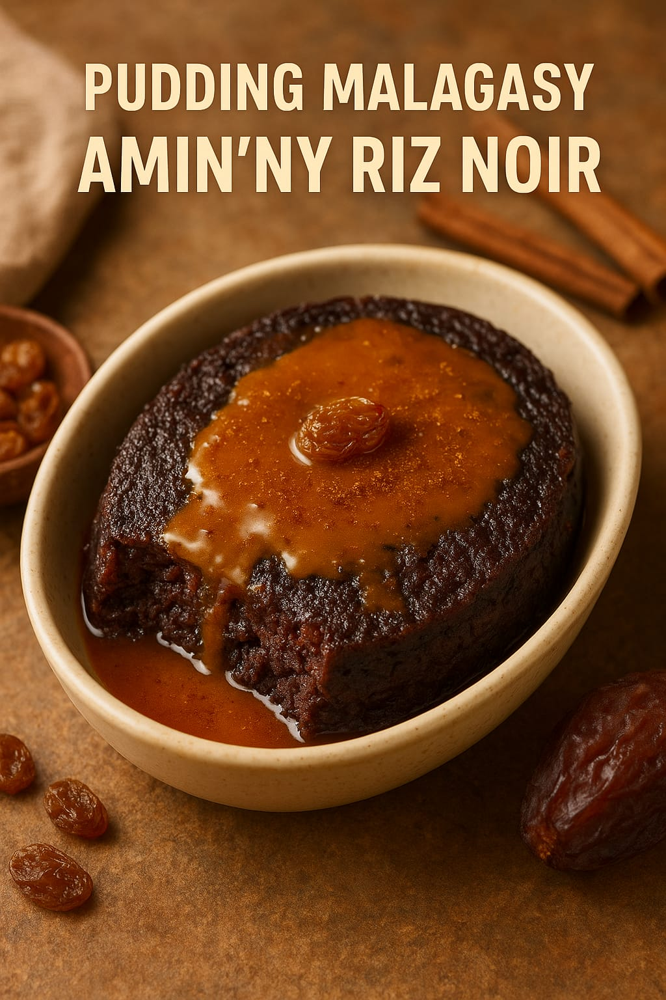

Top créations BIO MADA
Découvrez 3 recettes signatures, saines et gourmandes.

Cookies au riz noir
Des cookies originaux à base de riz noir, riches en goût et en caractère. Une alternative gourmande, pensée pour allier plaisir et équilibre avec des ingrédients locaux soigneusement sélectionnés.

Bûches au riz noir & haricot noir
Une création généreuse qui marie riz noir et haricot noir pour un résultat à la fois nourrissant et savoureux. Idéal pour une pause saine, avec une bonne sensation de satiété.

Pudding malagasy au riz noir
Un pudding inspiré du savoir-faire malagasy, revisité avec du riz noir. Texture fondante, goût délicat, parfait pour un dessert ou un goûter qui respecte une alimentation plus saine.